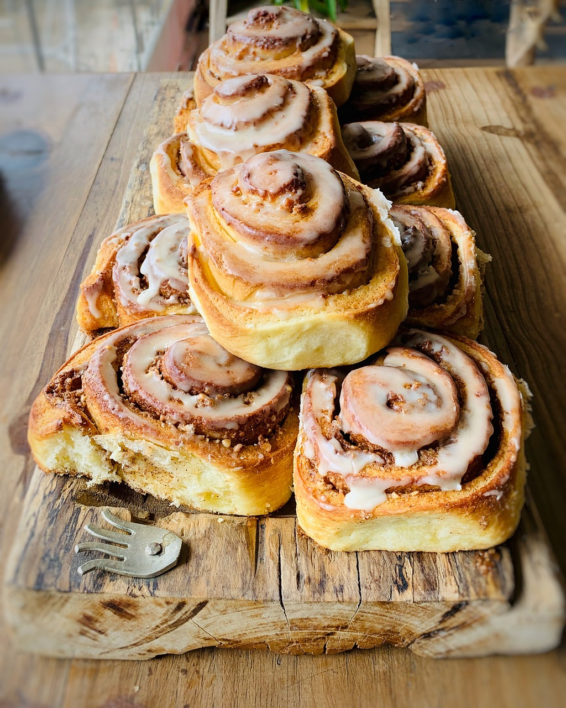

Cinnamon Rolls

Cinnamon Rolls
Igredients
- Milk
- Yeast
- Sugar
- Flour
- Butter
- Eggs
- Cinnamon
Recipe
- Mix yeast, a bit of milk, flour and sugar in a bowl. Then let it sit for 30 minutes.
- Mix the rest of the igredients (except cinnamon) and add leaven. Then let it sit for an hour.
- Add cinnamon, make rolls and let them sit for 30 minutes.
- Bake for 40 minutes.
Home